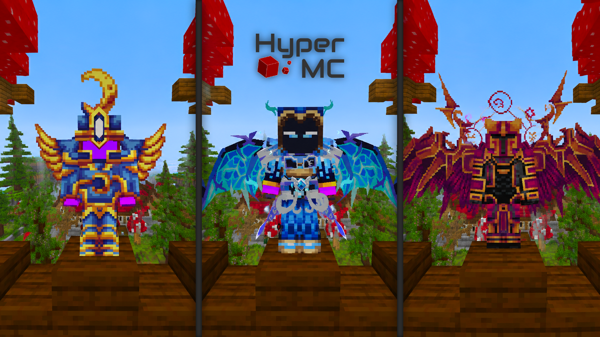

Ciao, io sono Piarumat
Benvenuti nel mio spazio digitale. In questo sito potrete scoprire di più su di me, sulle mie abilità e sulle mie passioni. Potrete dare un occhiata ai miei progetti o contattarmi per qualsiasi domanda o richiesta.
Breve biografia
Io sono Piarumat, giovane ragazzo di 14 anni amante dell'informatica e del digitale. Ho coltivato questa passione negli anni fino ad oggi, dedicandomi a creare contenuti digitali unici e coinvolgenti. Dalla creazione di plugin per Minecraft fino alla progettazione di un intero server, porto la mia passione a crescere insieme a chi mi sta intorno.
Skills
- Creazione di plugin Minecraft
- Creazione di Server Minecraft
- Creazione di Server Discord
- HTML5 e CSS3
Le mie passioni
Bisogno
di
consigli?
Se hai bisogno di consigli per qualsiasi cosa, che siano domande sul mio lavoro o richieste particolari per plugin di Minecraft, non esitare a contattarmi, risponderò il prima possibile per esserti d'aiuto.
ContattamiIl mio più grande progetto: HyperMC
Questo è il progetto più grande a cui sto lavorando attualmente. Si tratta di un server Minecraft personalizzato. L'obbiettivo è chiaro, realizzare un server unico e coinvolgente e scalare le classifiche fino al top in Italia. Il progetto è in corso di sviluppo e siamo impegnati a dare il meglio possibile, ma è comunque possibile visitare il sito del server.
